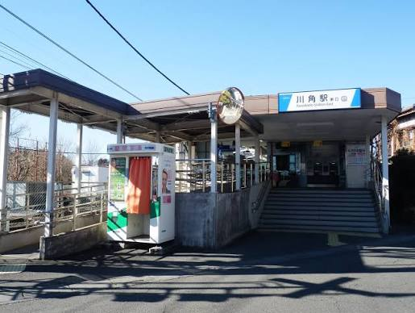

このサイトについて
このサイトは、情報学特講の最終課題として作成しました。 普段の大学生活の中で感じたことや、空き時間の過ごし方などを 自分なりにまとめています。
大きなテーマではありませんが、実際に自分が通っている場所や 日常を題材にすることで、自分らしいWebサイトになるようにしました。

作成で意識したこと
見やすさ
文章を詰め込みすぎず、余白を作って読みやすくしました。
自分らしさ
大学生活の中で実際に感じたことをテーマにしました。
授業内容
HTML、CSS、画像、リンク、JavaScriptを使いました。
今日のひとことメモ
ボタンを押すと、ちょっとしたメモが表示されます。